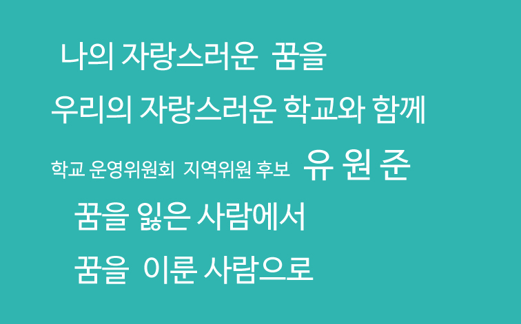

미래에 되고싶은 것이 있다면
목표기한 2020년 (26세)
신체적으로 다리가 불편하여 어떤 꿈을 가저야할지 한참을 방황하다가 찾은 꿈이 홈페이지 제작업체에 들어가고 싶다는 것이였다.
지원동기를 말하라고 한다면 홈페이지는 다리가 불편한 나에게 가고 싶은 곳을 마음대로 움직이지는 못하지만
홈페이지를 통해 간접적으로 근황이나 소식을 접하고 친구같은 느낌으로 다가왔다고 느꼈기 떄문이다.
아직 출마하진 않았지만 슬로건도 만들어봤다

돈을 벌기 시작한 지금은 내가 하고싶은 활동이 있다면 학교운영위원회에 들어가 운영위원이 되어보는 것이다.
과거 페이지에도 적었지만 좀더 구체적으로 적는다면 학교에 운영위원회에 들어가 나에게 많은 사랑과 응원을
보내준
우리 학교에 보답하고 싶다. 아직 나는 지금 이 페이지를 만들고 있는 현재 나이는 24세인 상황이지만 꼭 이루고싶은 꿈중에 하나이다.
물론 마음같아서야 당장 내년이라도 뽑히면 좋겠지만, 학교운영위원회는 그냥 놀러오는 자리가 아니고
많은 학부모님과 학생들을 대표하여 학교의 발전을 위해 일하는 자리이다.
학창시절 나에게 많은 사랑과 관심을 보여준 우리의 학교에게 나도 진실성있는 나의 모습을 보여주어야 한다고 생각한다.
중학교 시절 성적부진을 겪을때도 , 체육에 대한 후회로 눈물을 쏟았을떄도. 그리고 고등학교에 있을떄도 5년 연속으로 저와 똑같은 학교에서 지내며 저를 친아들처럼 키워놓은 체육선생님을 위해 보답하고 싶다.
물론 다리가 안좋은 상황에서 체육계 선수나 코치, 지도자로 진출하는 것은 어려움이 있겠지만 꼭 체육을 직업으로 하지는 않더라도. 내가 종사하는 분야에서 돈을 번다면 그 돈으로 학교의 체육을 발전시켜 나가는데
쓰고싶다.